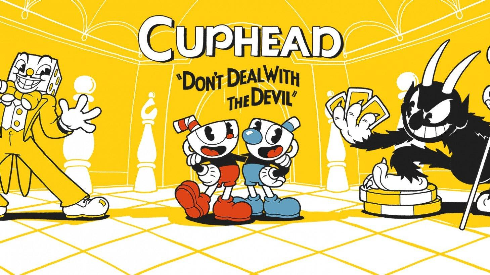

|  |
茶杯头（Cuphead） 是Studio MDHR开发的跑动射击兼平台跳跃游。 游戏以Boss对战为主，受20世纪30年代动画的启发，游戏无论是在画面还是音效上都努力再现了当时的技术，如传统的赛璐璐手绘动画、水彩背景还有原声爵士乐录音等。玩家在游戏中将扮演茶杯头或马克杯人穿越奇异的世界、收集新武器、掌握强力酷炫招式并探索隐藏的秘密，为了还清欠魔鬼的债务而奋战。 背景设定 很久以前，在一个名为墨池岛的神奇的地方，住着茶杯头和马克杯人两兄弟。在智者水壶公公的照料之下，他们过着无忧无虑的生活。 一天，两兄弟游荡到了离家很远的地方。尽管水壶公公再三叮嘱，他们还是来到了魔鬼的赌场。进去之后，茶杯头和马克杯人很快就在赌桌上找到了状态，连战连胜。此时，赌场的老大魔鬼出现，并提出一个巨大的赌注。茶杯头被发财梦冲昏了头脑，毫不犹豫地同意了。尽管马克杯人察觉到了危险，但是已经为时已晚，茶杯头已经负债累累。 在不断向自己求饶的两兄弟面前，魔鬼提出让他们帮自己去收集欠他债的人的灵魂，还命令他们必须在第二天午夜之前把所有的灵魂收回来，否则就拿走他们的灵魂。而为了还清欠魔鬼的债务，茶杯头和马克杯人开始在四处冒险。 场景地图 在游戏中，玩家可以自由地探索所在的墨池岛。墨池岛分为3个部分，玩家需要通过前面1个岛屿的所有关卡后才能前往下一个岛屿。每个岛屿都有一个商店、2个普通关卡以及不少Boss关卡。而在普通关卡中，玩家可在探索时获得5枚金币。玩家亦能通过与NPC对话从而获得有用的信息。 游戏评价 《茶杯头》以优秀的素质完美地诠释了“游戏为什么能被称之为第九艺术”这一命题。虽然业内关于重现20世纪经典的旅程一直都没有过停歇，但是却从没有一部游戏，无论在动画、音乐还是其他地方，在复古方面做到《茶杯头》这般极致，就连迪士尼自己曾做过的游戏《汽船威利》也难望其项背。虽然过于硬核的难度让通关它成为了一件非常有挑战的事，但是在如此优秀的画面和配乐下，玩家似乎没有什么理由能让自己不去试试这款游戏。（游民星空 评） 可以肯定，《茶杯头》值得令玩家期待。在玩家完成困难的游戏后，他们或许经常会想“感谢上帝，我不用再忍受折磨了”，但是在玩《茶杯头》时，玩家会兴奋地不停地玩八到九个小时。如果玩家喜欢追求苛刻而又公平的挑战、对那灿烂的动画年代感兴趣，那么他将会在《茶杯头》中获得一场充满艺术感的冒险。真正的20世纪30年代的美术风格和爵士乐、巧妙的Boss设计、2D设计基础之上的优秀玩法，都证明《茶杯头》是一个如此漂亮的游戏。（Games Radar 评） |
| back |